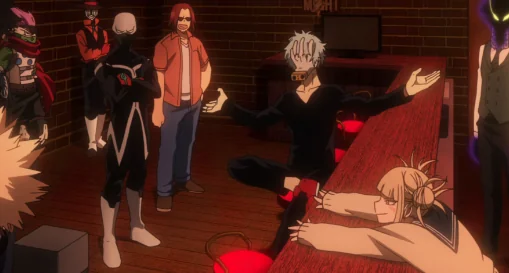

Welcome to my World!
Hi, I'm Himiko Toga and you'll get to know a little about me here!
Growing up wasn't easy. Once my Quirk manifested my parents thought it was weird and wanted me to live a normal life. But to me that was a normal life...
So I began supressing my urges and feelings.
Ideally you could guess what came next...
Eventually after surpressing my urges for so long they all came bubbling up after meeting my first crush in grade school.
Things didn't end well for me there And my parents abandoned me. That's when I managed to find the League of villains who accepting me as I was.

When I was rejected by society the League of Villains took me in. The leader was Shigaraki and I made a close friend in Twice. (He's on the right!)
I never felt lonely around them. They took me in as family more than my actual family ever did. I felt at home.
Among the villains was Twice, the one I became close with. He was like an older brorther to me and dear friend.
While part of the League of Villains, I got to wear my own villain costume! It contained ways to easily get blood, knives and canisters to store blood. And I got a cool mask!
The upcoming war with the heroes may be the last I see everyone. I'm not wanting to end it here but I can't turn back now; this is my choice and I'm sticking to it.
All I ever wanted was a normal life. And for a short while I had one. And thanks to someone else, I was finally happy. I'm Himiko Toga, and I lived exactly how I wanted.